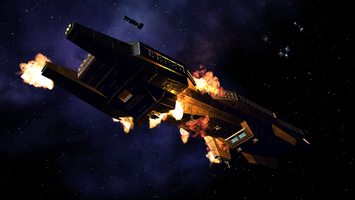
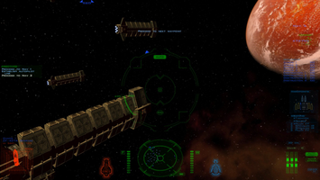
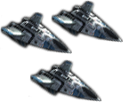

Wing Commander Saga - The Darkest Dawn
Dieser Artikel wurde für die folgenden Ubuntu-Versionen getestet:
Ubuntu 14.04 Trusty Tahr
Zum Verständnis dieses Artikels sind folgende Seiten hilfreich:
Wing Commander Saga - The Darkest Dawn  ist eine Total Conversion des Spieles Freespace 2, die jedoch Freespace 2 nicht benötigt und auf dem freigegebenen Quelltext dieses Spiels basiert. Im Gegensatz zu Privateer Remake handelt es sich hier um eine reine Kampfsimulation.
ist eine Total Conversion des Spieles Freespace 2, die jedoch Freespace 2 nicht benötigt und auf dem freigegebenen Quelltext dieses Spiels basiert. Im Gegensatz zu Privateer Remake handelt es sich hier um eine reine Kampfsimulation.
Wing Commander Saga ist zeitlich parallel zum dritten Teil der Serie angesiedelt. Das Spiel erzählt die Geschichte aus Sicht von 2nd Lieutenant David „Sandman“ Markham.
Der Ende 2006 veröffentlichte Prolog erzählt die Geschichte der ersten Tage auf dem Träger TCS CV-50 Wellington. Die Tugenden des Originals kombinieren die Entwickler mit abwechslungsreichen Missionen. Zwar verzichtet man nicht auf Zwischensequenzen, die die Geschichte im Spiel weitererzählen, trotzdem bietet man auch noch Kapitel in Textform. Diese werden in einem eigenständigen Programm, dem sogenannten Fiction Viewer, angezeigt.
Am 22. März 2012 wurde die Vollversion von Wing Commander Saga: The Darkest Dawn veröffentlicht. Sie enthält neben einer veränderten Version des Prologs eine Hauptkampagne, die während den Ereignissen in Wing Commander 3 auf dem Träger TCS CVA 98 Hermes stattfindet.
|  |  |
| Spielszene | Spielszene |
Vorbereitung¶
Die hier beschriebene Installation erfolgt über eine Archivdatei, die auf Basis der wineportlib erstellt wurde. Allerdings liefert die Datei alle notwendigen Abhängigkeiten mit, so dass hier nichts weiter beachtet werden muss.
Installation¶
Das 3,4 GiB große Archiv kann als WingCommanderSaga.tar.gz  heruntergeladen werden.
heruntergeladen werden.
Hinweis!
Fremdsoftware kann das System gefährden.
Nach dem Herunterladen wird dringend empfohlen, die Integrität das Pakets mit md5sum zu prüfen (siehe auch Hashfunktionen): WingCommanderSaga_md5sum.txt
Nach dem Herunterladen des Archivs entpackt [1] man dieses an einer beliebigen Stelle und startet das Setup zur Installation auf 64-bit-Systemen durch einen Doppelklick auf der im entpackten Verzeichnis befindlichen Datei setup (siehe auch Problembehebung).
Bedienung¶
Nach erfolgter Installation sollte es einen entsprechenden Menüeintrag in der Spiele-Kategorie geben. Beim ersten Start, erscheint ein PlayOnLinux-Konfigurationsassistent, welcher die passende Wine-Version, die benötigten Bibliotheken und die Verzeichnisstruktur einrichtet. Hierbei sollten alle eventuell auftretenden Fragen nach der Installation zusätzlicher Komponenten bestätigt werden. Die Ersteinrichtung kann je nach Anzahl der nachzuladenen Komponenten ein wenig Zeit in Anspruch nehmen. Dies passiert jedoch nur beim ersten Start des Spiels.
Weiterhin muss man vor dem ersten Start die Lizenzbedingungen bestätigen, wenn man mit diesen einverstanden ist.
Problembehebung¶
Setup startet nicht¶
Das kann bei der Verwendung einer 32-bit-Version von Ubuntu passieren, da das Setup-Programm mit 64-Bit kompiliert wurde. Im Unterverzeichnis packages/ des Archivs findet man alle notwendigen Debian-Pakete zur manuellen Installation[2].
Alternativ kann man die Pakete auch über ein Terminal [3][4] installieren:
sudo dpkg -i wing_commander_saga-animations-1.0.2.1_all.deb sudo dpkg -i wing_commander_saga-maps-1.0.2.1_all.deb sudo dpkg -i wing_commander_saga-misc-1.0.2.1_all.deb sudo dpkg -i wing_commander_saga-movies-1.0.2.1_all.deb sudo dpkg -i wing_commander_saga-1.0.2.1_all.deb

Infobox¶
| Wing Commander Saga - The Darkest Dawn | |
| Genre: | Spacesimulation |
| Sprache: | |
| Veröffentlichung: | 2012 |
| Entwickler: | Wing Commander Saga Crew |
| Publisher: | Wing Commander Saga Crew |
| Systemvoraussetzungen: | 1 GHz-CPU, 2 GB RAM, 6 GB Festplatte, 128 MB Grafikkarte, |
| Medien: | Download |
| Strichcode / EAN / GTIN: | - |
| Läuft mit: | wineportlib |

- Erstellt mit Inyoka
-
 2004 – 2017 ubuntuusers.de • Einige Rechte vorbehalten
2004 – 2017 ubuntuusers.de • Einige Rechte vorbehalten
Lizenz • Kontakt • Datenschutz • Impressum • Serverstatus -
Serverhousing gespendet von